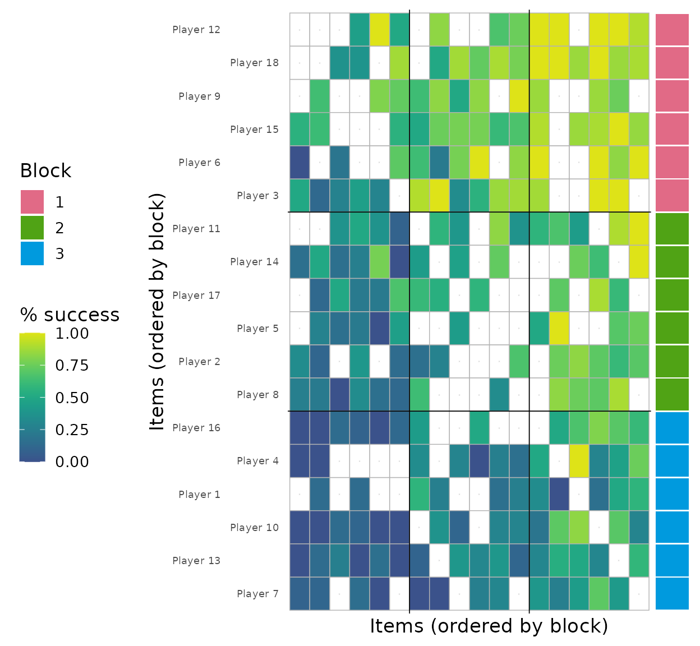
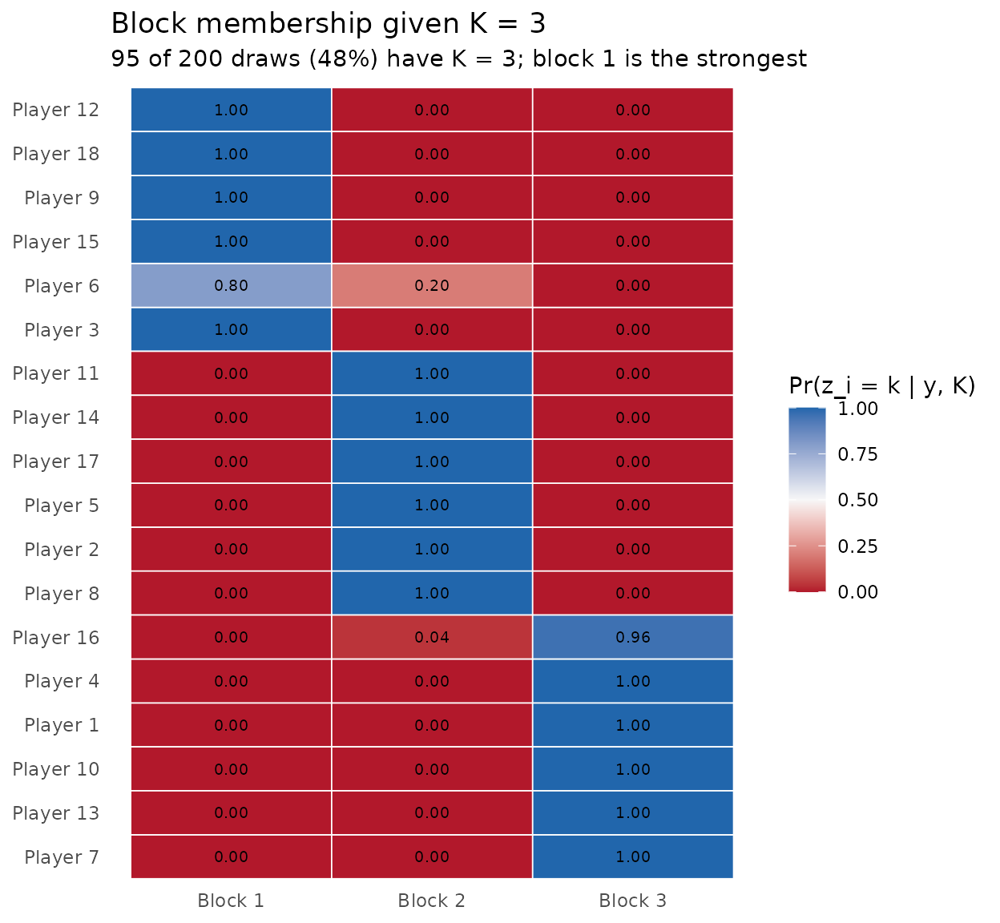
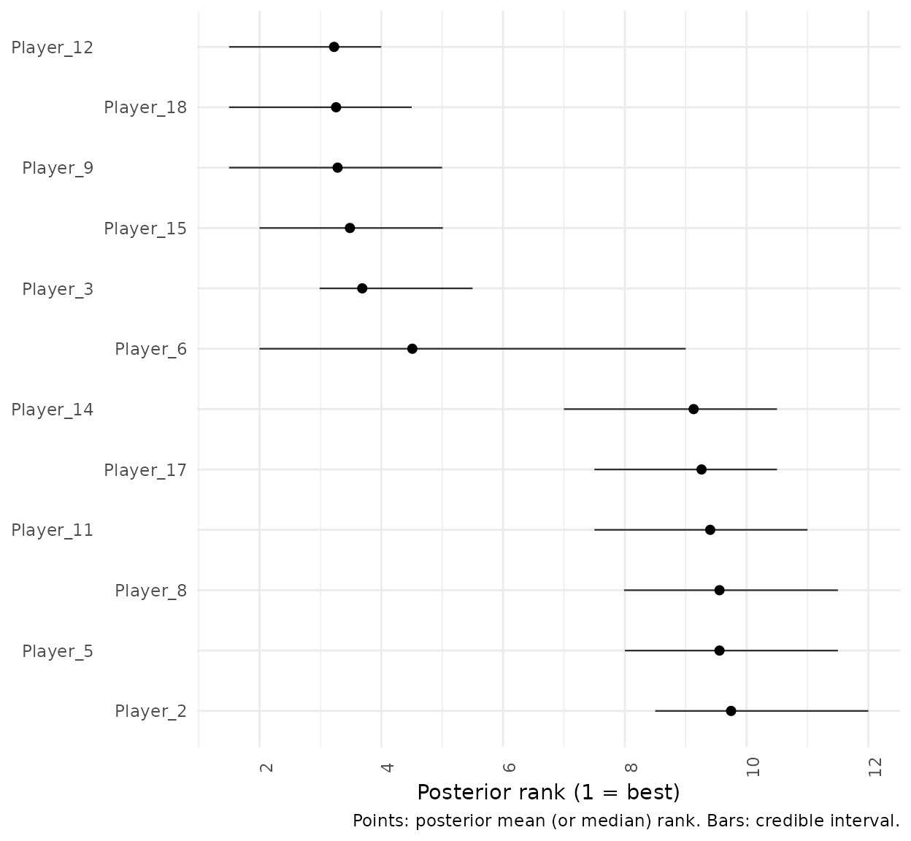
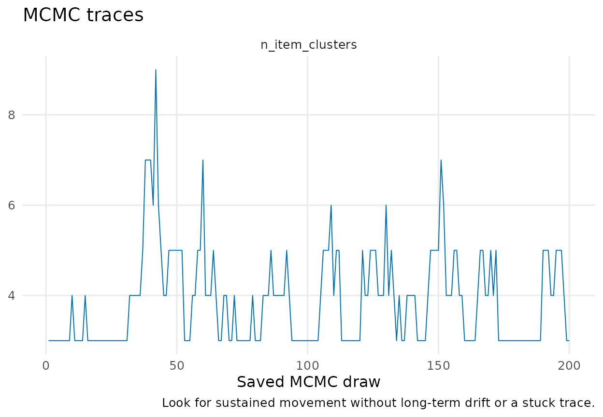

Package 'RBBayes'
Lapo Santi and Nial Friel
2026-10-16
Source:vignettes/BTSBM-software-paper.Rmd
BTSBM-software-paper.Rmd
BTSBM-package: Bayesian paired-comparison and ranking
models with latent blocks
Description
RBBayes provides Bayesian Bradley–Terry and Plackett–Luce models through one data–model–fit interface. This vignette focuses on the Bradley–Terry stochastic block model (BT–SBM), in which items with similar competitive strength share an ordered latent block. The model learns block membership, block strength, and the number of occupied blocks jointly.
Details
Pairwise-comparison data record directional outcomes between items: a player defeats an opponent, a judge prefers one object to another, or one system wins an evaluation. The classical Bradley–Terry model assigns every item its own positive strength and therefore induces a strict order. That resolution can be too fine when nearby items are not credibly separable.
The BT–SBM instead assigns item \(i\) to a latent block \(x_i\). Items in the same block share a strength \(\lambda_{x_i}\); occupied blocks are ordered by strength. The result is a probabilistic tiered ranking rather than a forced item-by-item ordering. Posterior output keeps uncertainty visible through a distribution over the number of blocks, a block-ordered outcome matrix, conditional assignment probabilities, and rank intervals.
The public workflow has four stages: prepare data, specify a model, set MCMC controls, and fit. The same fit class is then consumed by summaries, plots, diagnostics, and predictive-comparison functions.
Quick start
wins <- ATP_2000_2025$`2017`$Y_ij
diag(wins) <- 0L
pairwise <- as_bt_data(wins)
model <- bt_sbm_model(
latent_strength = latent_strength(shape = 2, rate = exp(digamma(2))),
item_clustering = gnedin_prior(gnedin_hyperparameter = 0.8)
)
fit <- fit_model(
pairwise,
model,
mcmc_control(iter = 2000, warmup = 1000, seed = 1)
)
pretty_table_K_distribution(fit, p_min = 0)
plot_block_adjacency(fit)
plot_assignment_probabilities(fit)Authors
Lapo Santi and Nial Friel.
References
Bradley, R. A. and Terry, M. E. (1952). Rank analysis of incomplete block designs: I. The method of paired comparisons. Biometrika, 39(3/4), 324–345.
Santi, L. and Friel, N. (2026). The Bradley–Terry stochastic block model. The Annals of Applied Statistics, 20(2), 1766–1787.
as_bt_data: Create validated Bradley–Terry pairwise
data
Description
as_bt_data() converts a square directed win-count matrix
into the validated pairwise-data representation used by the common
fitting interface.
Usage
as_bt_data(wins, item_labels = NULL)Arguments
| Argument | Description |
|---|---|
wins |
Numeric square matrix. wins[i, j] is the number of wins
for item \(i\) over item \(j\). The diagonal must be zero. |
item_labels |
Optional character vector of item names. Matrix row names are used by default when available. |
Value
An object of class btsbm_pairwise_data. It contains the
validated directed win matrix and labels required by the fitting and
plotting methods.
Details
Let \(w_{ij}\) be the number of
times item \(i\) defeats item \(j\), with \(w_{ii}=0\), and define \(n_{ij}=w_{ij}+w_{ji}\). RBBayes stores the
matrix \(\mathbf W=(w_{ij})\) in the
object returned by as_bt_data() and computes match totals
internally.
Example
This vignette uses one synthetic league throughout. It contains 18 players generated from three strength tiers.
simulation <- sample_from_BTSBM(
n_players = 18,
K = 3,
mean_matches = 8,
p_edge = 0.75,
lambda = c(0.25, 0.9, 2.4),
reverse_lambda = FALSE,
seed = 123
)
player_labels <- paste0("Player_", seq_len(nrow(simulation$w)))
pairwise <- as_bt_data(simulation$w, item_labels = player_labels)
pairwise$wins[1:6, 1:6]
#> Player_1 Player_2 Player_3 Player_4 Player_5 Player_6
#> Player_1 0 1 0 0 0 0
#> Player_2 5 0 1 6 0 0
#> Player_3 0 6 0 0 5 2
#> Player_4 5 2 0 0 0 0
#> Player_5 0 0 4 12 0 0
#> Player_6 0 0 5 0 5 0
bt_sbm_model: Define a Bradley–Terry stochastic block
model
Description
bt_sbm_model() defines a clustered Bradley–Terry model.
The simple model is defined with bt_model(). Both
constructors return a btsbm_model and are fitted by
fit_model().
Usage
bt_sbm_model(
latent_strength = latent_strength(
shape = 4,
rate = exp(digamma(4))
),
item_clustering = gnedin_prior(
gnedin_hyperparameter = 0.5
),
ability_prior = NULL,
item_prior = NULL
)Arguments
| Argument | Description |
|---|---|
latent_strength |
Gamma prior for positive block strengths, created by
latent_strength(). |
item_clustering |
Prior on the latent item partition. |
ability_prior |
Deprecated alias for latent_strength. |
item_prior |
Deprecated alias for item_clustering. |
Value
A btsbm_model specification. It records scientific
choices without starting the sampler.
Details
Each item has a block label \(x_i\in\{1,\ldots,K\}\) and each occupied block has a positive strength \(\lambda_k\). The probability of a win is
\[ \Pr(i\text{ defeats }j\mid x,\lambda) =\frac{\lambda_{x_i}}{\lambda_{x_i}+\lambda_{x_j}}, \]
so the aggregated observation satisfies
\[ w_{ij}\mid n_{ij},x,\lambda \sim\operatorname{Binomial}\!\left( n_{ij},\frac{\lambda_{x_i}}{\lambda_{x_i}+\lambda_{x_j}} \right). \]
The prior over \(x=(x_1,\ldots,x_n)\) is a named model component rather than a collection of sampler-specific arguments.
| Scientific choice | Constructor |
|---|---|
| Random finite number of blocks | gnedin_prior(gnedin_hyperparameter = 0.8) |
| Dirichlet-process partition | dirichlet_process_prior(concentration = 1) |
| Pitman–Yor partition | pitman_yor_prior(concentration = 1, discount = 0.2) |
| Fixed upper bound | finite_partition(max_clusters = 4, concentration = 1) |
Examples
model_gnedin <- bt_sbm_model(
latent_strength = latent_strength(shape = 2, rate = exp(digamma(2))),
item_clustering = gnedin_prior(gnedin_hyperparameter = 0.8)
)
model_finite <- bt_sbm_model(
item_clustering = finite_partition(max_clusters = 6)
)
mcmc_control: Set MCMC controls for an RBBayes fit
Description
mcmc_control() collects computational settings
separately from the model specification. This makes it possible to reuse
the same scientific model with different chain lengths, seeds, or
initial states.
Usage
mcmc_control(
iter = 2000,
warmup = floor(iter / 2),
seed = NULL,
store = c("minimal", "augmented"),
init_item_cluster = NULL,
init_ranking_cluster = NULL,
verbose = FALSE,
progress_every = 1000L,
partition_moves = NULL
)Arguments
| Argument | Description |
|---|---|
iter |
Total number of MCMC iterations. |
warmup |
Number of initial iterations discarded as warmup. |
seed |
Optional integer seed for reproducibility. |
store |
Store the minimal state or also keep latent augmentations. |
init_item_cluster |
Optional initial item partition. |
init_ranking_cluster |
Optional initial ranking partition for PL mixture and PL–LBM models. |
verbose, progress_every
|
Control progress reporting. |
partition_moves |
Optional settings created by partition_moves(). |
Value
An object of class btsbm_mcmc_control.
Example
control <- mcmc_control(iter = 400, warmup = 200, seed = 124)
control
fit_btsbm: Fit a Bayesian Bradley–Terry or
Plackett–Luce model
Description
fit_model() is the common fitting entry point for the
simple and clustered Bradley–Terry and Plackett–Luce models.
Usage
fit_model(data, model, control = mcmc_control())Arguments
| Argument | Description |
|---|---|
data |
A btsbm_pairwise_data or
btsbm_ranking_data object created by
as_bt_data() or as_rankings(). |
model |
A model object created by an RBBayes model constructor. |
control |
An object created by mcmc_control(). |
Value
An object of class btsbm_fit. Its stable draw names
allow the same downstream summary and diagnostic functions to work
across supported models.
Details
The internal BT–SBM kernel alternates three updates. A Thurstonian augmentation introduces latent \(Z_{ij}\) variables for observed pairs. Item labels are then updated one at a time using the selected partition prior and the augmented likelihood. Finally, occupied strengths have conjugate Gamma updates. The number of occupied blocks may change during the label update, so \(K\) is sampled rather than fixed.
Cluster labels are permutation-invariant. For the summaries in this
vignette, each draw is relabelled by decreasing occupied strength: block
1 is strongest, block 2 is second strongest, and so forth. Users do not
need to call a separate relabel step when using the
btsbm_fit functions documented below.
Example
model <- bt_sbm_model(
latent_strength = latent_strength(shape = 2, rate = exp(digamma(2))),
item_clustering = gnedin_prior(gnedin_hyperparameter = 0.8)
)
fit <- fit_model(pairwise, model, control)
fit
#> <btsbm_fit> bt / item_sbm with 200 saved draws
pretty_table_K_distribution: Format the posterior
distribution of occupied blocks
Description
This function produces a compact horizontal table of the posterior distribution of \(K\), the number of occupied item blocks. A complete distribution is usually more informative than its mode alone.
Usage
pretty_table_K_distribution(
post,
format = "html",
p_min = 0,
digits = 3,
latex_options = "hold_position"
)Arguments
| Argument | Description |
|---|---|
post |
A btsbm_fit with an item partition, or relabelled
output. |
format |
Output format, usually "html" or
"latex". |
p_min |
Drop probabilities no larger than this threshold. |
digits |
Number of digits used to display probabilities. |
latex_options |
Styling options passed to kableExtra for LaTeX
output. |
Value
A knitr_kable object suitable for the requested document
format.
Example
pretty_table_K_distribution(
fit,
format = if (knitr::is_latex_output()) "latex" else "html",
p_min = 0
)| Quantity | 3 | 4 | 5 | 6 | 7 | 9 |
|---|---|---|---|---|---|---|
| Posterior probability | 0.475 | 0.275 | 0.195 | 0.025 | 0.025 | 0.005 |
plot_block_adjacency: Display outcomes in posterior
block order
Description
plot_block_adjacency() draws observed win rates after
ordering items by a representative posterior partition and then by
marginal win proportion within each block. Boundary lines and the
coloured side band mark block transitions.
Usage
plot_block_adjacency(
fit,
w_ij = NULL,
x_hat = NULL,
relabel_blocks = c("none", "avg_lambda"),
lambda_hat = NULL,
relabel_decreasing = TRUE,
clean_fun = clean_players_names,
players_df = NULL,
players_id_col = NULL,
labels = NULL,
labels_key_col = NULL,
labels_value_col = NULL,
clean_display_labels = NULL,
order_ids = NULL,
palette = NULL,
fill_low = "#FFFFCC",
fill_high = "#006400",
no_match_label = "No match played",
no_match_color = "white",
mark_unplayed = TRUE,
unplayed_mark = "×",
unplayed_mark_size = 2.2
)Arguments
| Argument | Description |
|---|---|
fit |
A BT–SBM btsbm_fit object, or compatible relabelled
output. |
w_ij, x_hat
|
Optional win matrix and partition estimate; these are normally
obtained from fit. |
relabel_blocks, lambda_hat,
relabel_decreasing
|
Optional controls for ordering block labels by average strength. |
clean_fun |
Optional function used to tidy display labels. |
labels |
Optional display labels, either named by item ID or aligned with items. |
players_df, players_id_col,
labels_key_col, labels_value_col,
clean_display_labels
|
Optional metadata-based label lookup and cleaning controls. |
order_ids |
Optional explicit ordering of item IDs. |
palette |
Optional named vector of block colours. |
fill_low, fill_high
|
Endpoints of the observed-win-rate colour scale. |
no_match_label, no_match_color
|
Legend label and colour for pairs with no observed match. |
mark_unplayed, unplayed_mark,
unplayed_mark_size
|
Control the optional marker drawn over unplayed pairs. |
Value
A ggplot object. Each matrix cell is the observed win
rate \(w_{ij}/n_{ij}\), not a posterior
fitted probability.
Example
plot_block_adjacency(fit, clean_fun = identity)
Observed win rates reordered by the representative posterior partition. Boundary lines and the side band mark inferred blocks.
plot_assignment_probabilities: Display posterior
uncertainty over block membership
Description
This heatmap shows item-wise posterior assignment probabilities after ordering blocks by decreasing strength. By default, probabilities are conditional on the modal sampled value of \(K\). This separates uncertainty about which block an item occupies from uncertainty about how many blocks exist.
Usage
plot_assignment_probabilities(
fit,
w_ij = NULL,
max_n_clust = NULL,
players_df = NULL,
players_id_col = NULL,
labels = NULL,
labels_key_col = NULL,
labels_value_col = NULL,
clean_display_labels = NULL,
clean_fun = clean_players_names,
x_hat = NULL,
order_ids = NULL,
k_show = NULL,
fill_low = "#FFFFCC",
fill_high = "#006400"
)Arguments
| Argument | Description |
|---|---|
fit |
A BT–SBM btsbm_fit object, or compatible relabelled
output. |
w_ij |
Optional win matrix used for ordering and annotation; it is normally
obtained from fit. |
max_n_clust |
Occupied-cluster count on which probabilities are conditioned; the posterior mode is used by default. |
labels, clean_fun
|
Optional display labels and a function for tidying them. |
players_df, players_id_col,
labels_key_col, labels_value_col,
clean_display_labels
|
Optional metadata-based label lookup and cleaning controls. |
x_hat, order_ids
|
Optional controls for item order. |
k_show |
Compatibility alias for max_n_clust. |
fill_low, fill_high
|
Endpoints of the probability colour scale. |
Value
A ggplot object. A diffuse row indicates that an item
lies near a posterior block boundary.
Example
plot_assignment_probabilities(fit, clean_fun = identity)
Posterior block-membership probabilities conditional on the modal number of occupied blocks.
plot_rank_intervals: Plot posterior rank intervals
Description
Because all items in a block share a strength, their induced ranks
are tied. plot_rank_intervals() summarizes posterior
ordering without inventing within-block precision.
Usage
plot_rank_intervals(
x,
max_players = NULL,
w_ij = NULL,
player_names = NULL,
burn_in = 0,
thin = 1,
ci = 0.95,
ties.method = "average",
rank_grid_by = 0.5
)Arguments
| Argument | Description |
|---|---|
x |
A posterior-rank summary, posterior strength draws, a
btsbm_fit, or compatible relabelled output. |
max_players |
Optional maximum number of items displayed. |
w_ij, player_names
|
Optional data and labels used when rank summaries must be computed. |
burn_in, thin
|
Optional post-processing controls for supplied draws. |
ci |
Posterior interval level. |
ties.method |
Method passed to base::rank(). |
rank_grid_by |
Spacing of the posterior-rank probability grid. |
Value
A ggplot object.
Example
plot_rank_intervals(fit, max_players = 12)
mcmc_diagnostics: Summarise mixing and inspect saved
traces
Description
mcmc_diagnostics() computes lightweight scalar
diagnostics, while plot_mcmc_traces() shows whether saved
draws move around a stable region. Trace plots are an initial
diagnostic, not proof of convergence.
Usage
mcmc_diagnostics(fit)
plot_mcmc_traces(fit, quantities = NULL)Arguments
| Argument | Description |
|---|---|
fit |
A btsbm_fit object. |
quantities |
Optional character vector naming scalar traces to display. |
Value
mcmc_diagnostics() returns a data frame with effective
sample size, Monte Carlo standard error, and lag-one autocorrelation for
each available scalar trace. plot_mcmc_traces() returns a
ggplot object.
Example
mcmc_diagnostics(fit)
#> quantity mean sd ess mcse autocorrelation_lag_1
#> 1 n_item_clusters 3.87 1.052921 35.20167 0.1774656 0.699808
plot_mcmc_traces(fit)
The short chain used here keeps the vignette quick to build. A scientific analysis should use longer independent chains and assess their agreement.
loo_btsbm: Run predictive comparison for a fitted
model
Description
loo_btsbm() runs Pareto-smoothed importance-sampling
leave-one-out cross-validation using the pointwise log likelihood stored
by the common fit interface.
Usage
loo_btsbm(fit, ...)Arguments
| Argument | Description |
|---|---|
fit |
A btsbm_fit object. |
... |
Additional arguments passed to loo::loo(). |
Value
A loo object. Models can be compared with
loo::loo_compare() when they use the same observations.
Example
simple_fit <- fit_model(
pairwise,
bt_model(latent_strength = latent_strength(shape = 2, rate = exp(digamma(2)))),
mcmc_control(iter = 400, warmup = 200, seed = 125)
)
if (requireNamespace("loo", quietly = TRUE)) {
loo::loo_compare(list(
simple = loo_btsbm(simple_fit),
clustered = loo_btsbm(fit)
))
} else {
"Install 'loo' to run the predictive comparison."
}
#> model elpd_diff se_diff p_worse diag_diff diag_elpd
#> clustered 0.0 0.0 NA 38 k_psis > 0.57
#> simple -4.5 3.5 0.90 5 k_psis > 0.57
BTSBM-design: Software architecture, assumptions, and
scope
Software design
The public architecture separates five responsibilities:
-
as_bt_data()andas_rankings()validate observations. - Model constructors state the likelihood and latent structure.
- Prior constructors state reusable strength and partition priors.
-
mcmc_control()holds computational settings. -
fit_model()returns a common fit consumed by summaries, plots, diagnostics, andlog_lik().
This contract also covers the package’s Plackett–Luce models. The model-specific sampler remains an implementation detail, so analyses do not need different extraction and plotting code merely because the likelihood changes.
Assumptions and limitations
The Bradley–Terry likelihood assumes one transitive strength dimension and conditions on the observed comparison counts. The current core model does not include pair-specific covariates, temporal dependence, surface effects, or other contextual predictors. Partition priors are exchangeable. These assumptions should be checked against the scientific setting before interpreting inferred tiers.
Conclusion
RBBayes provides a coherent Bayesian workflow for pairwise outcomes when a strict ranking is more precise than the evidence supports. The posterior distribution over \(K\), the block-ordered adjacency matrix, and conditional assignment probabilities jointly show the inferred hierarchy and the uncertainty around its resolution and boundaries.
References
Caron, F. and Doucet, A. (2012). Efficient Bayesian inference for generalized Bradley–Terry models. Journal of Computational and Graphical Statistics, 21(1), 174–196.
Vehtari, A., Gelman, A., and Gabry, J. (2017). Practical Bayesian model evaluation using leave-one-out cross-validation and WAIC. Statistics and Computing, 27, 1413–1432.